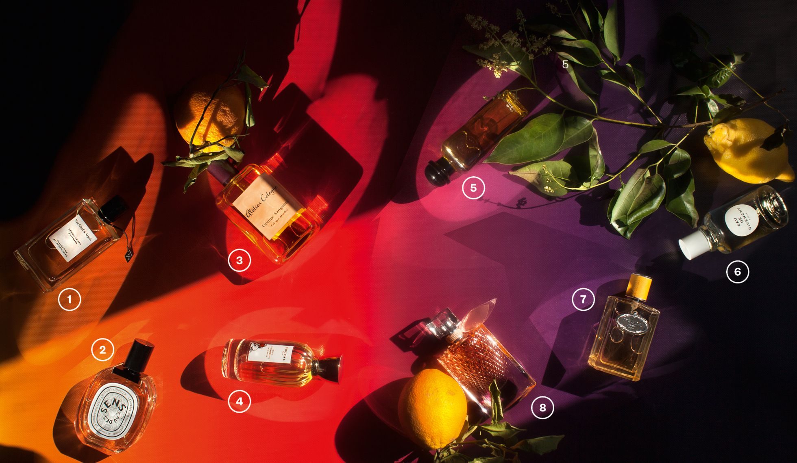

Karicha Lobato
1. Néroli Amara Collection Extraordinaire, de Van Cleef & Arpels. Inspirada en la sombra de un naranjo amargo en flor, incluye en su jugo nerolí, absoluto de azahar, petitgrain (naranjo agrio) y esencia de cáscara de naranja. $140 (75 ml). 2. Eau des Sens, de Diptyque. Esta agua de colonia es un auténtico tributo a la naranja amarga: en su corazón hay flor de naranja, nerolí y petitgrain. Le acompaña el enebro, el sándalo y la vainilla. $98 (100 ml). 3. Orange Sanguine, de Atelier Cologne. Este extracto de perfume tiene una concentración de aceites esenciales naturales del 15%, en el que destacan las notas de naranja sanguina de Italia, naranja amarga de Sevilla, jazmín de Egipto y haba tonka de Brasil. $148 (100 ml). 4. Bois D’Hadrien, de Annick Goutal. Perfume unisex. Su concentrado de cítricos contrasta con el ciprés, el abeto, la hiedra y las notas amaderadas y especiadas. $102 (50 ml). 5. Eau de Néroli Doré, de Hermès. Esta colonia rinde homenaje al mar Mediterráneo. El acorde de azafrán es el encargado de aportar el toque de sol. $106 (100 ml). 6. Eau de Givenchy (2018), de Givenchy. Esta fragancia para hombres y mujeres mezcla notas frescas (naranja, mandarina y bergamota) y amaderadas (madera de cedro y almizcle) para expresar las sensaciones de una tarde en la Costa Azul. $79.50 (100 ml). 7. Infusion Mandarine, de Prada. Se trata de la primera fragancia cítrica en incorporarse a la colección Les Infusions. Constituye una representación coreografiada de los matices esenciales de una naranja, con las notas presentes en la superficie y en la pulpa de la fruta. $114.50 (100 ml). 8. La Vie Est Belle L’Éclat, de Lancôme. Esta eau de toilette está compuesta por un corazón absoluto de flor de azahar, absoluto de jazmín de Arabia y esencia de nerolí que deja paso a un fondo de ámbar de madera y almizcle. $110 (100 ml).
25 de Agosto del 2018
Su paleta de sabores juega con lo amargo, lo cítrico y lo dulce. La variedad de notas de esta fruta compone todo tipo de fragancias que refrescarán el verano